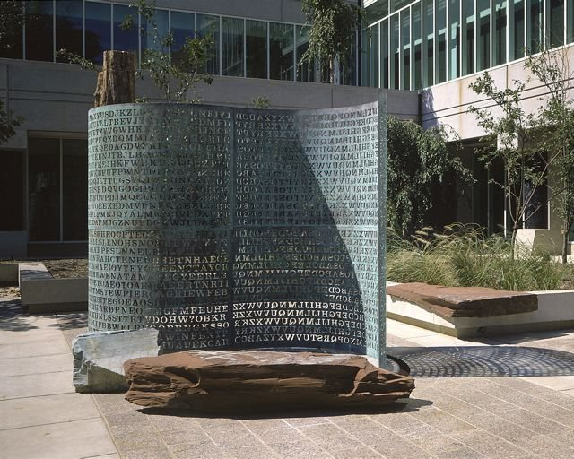
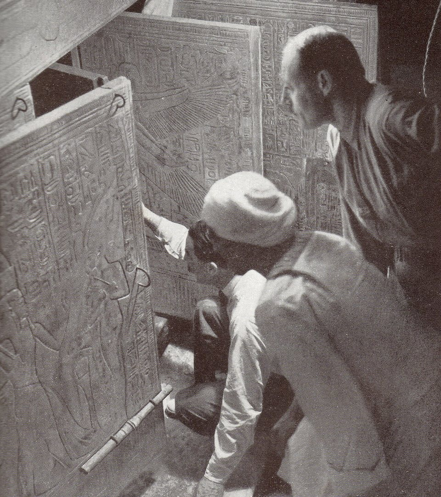
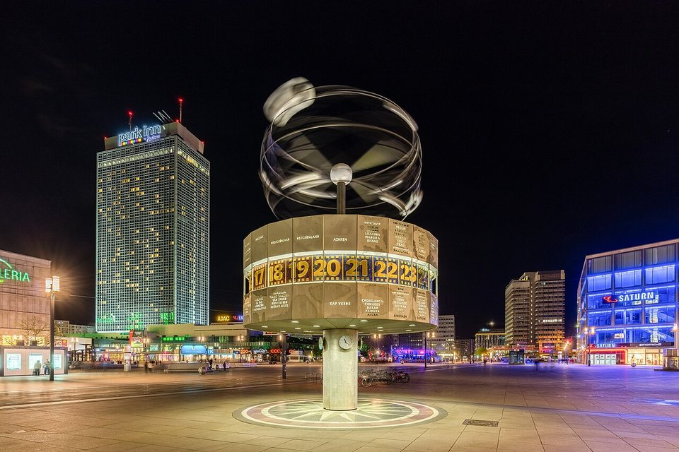
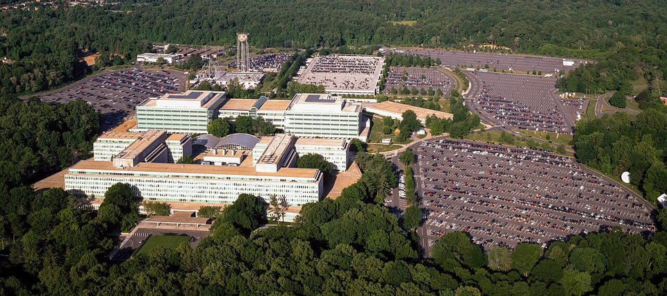

Kryptos — o texto que a CIA não leu
Desde 1990, uma lâmina de cobre recortada em letras fica no pátio interno da agência de espionagem mais conhecida do mundo. Três das quatro mensagens caíram em menos de dez anos. A quarta tem 97 caracteres, foi achada por acaso num arquivo, vendida por quase um milhão de dólares e trancada de novo — e continua sem ter sido decifrada.
- Onde
- Sede da CIA, Langley, Virgínia
- Inaugurada
- 3 de novembro de 1990
- Autor
- Jim Sanborn, com Ed Scheidt
- Texto cifrado
- 869 caracteres, em quatro seções
- Resolvidas
- K1, K2 e K3 (1992–1999)
- Em aberto
- K4 — 97 caracteres
No fim dos anos 1980, a CIA ampliou a sede de Langley, na Virgínia, com um segundo grande prédio, e reservou parte da verba para arte no terreno — como fazem muitas obras públicas americanas. O escultor de Washington Jim Sanborn, nascido em 1945, ganhou a encomenda em 1988, por 250 mil dólares. Ele propôs uma obra sobre o próprio ofício da casa: juntar informação, esconder informação, revelar informação.
O resultado ficou pronto em 1990 e foi inaugurado em 3 de novembro, no canto noroeste do pátio do Novo Edifício-Sede, do lado de fora do refeitório. Chama-se Kryptos — "oculto", em grego. Quem trabalha ali passa por ele todos os dias. Quem não trabalha não entra: o pátio fica dentro de uma das áreas mais vigiadas dos Estados Unidos. Por isso este dossiê está no pilar Arquivo Selado. A obra é pública só no sentido de que o texto dela foi fotografado e circula; o lugar, não.

01O escultor e o criptógrafo
Sanborn não era criptógrafo. Para cifrar o texto, a agência o pôs em contato com Edward Scheidt, que dirigia o Centro Criptográfico da CIA e estava se aposentando em 1989. Scheidt ensinou ao escultor sistemas de cifra clássicos, "desde César", nas palavras dele, e Sanborn escolheu alguns. Os dois combinaram compartimentar o trabalho: as mensagens em claro foram escritas por Sanborn, e a cifragem final também foi feita por ele. Scheidt sabe os métodos; não se sabe se conhece o texto inteiro da quarta parte. Na época, Scheidt avaliou a dificuldade em nove numa escala de dez e calculou que o conjunto cairia em cinco a dez anos.
A peça central é uma tela de cobre em forma de S, que lembra uma folha saindo de uma impressora, perfurada letra a letra. Em volta, Sanborn pôs água, plantas, granito vermelho e verde, quartzo branco e o tronco de madeira petrificada. Do lado de fora da entrada do prédio novo há mais elementos: lajes de granito com chapas de cobre entre elas, onde se leem frases em código Morse, e uma rosa dos ventos gravada que aponta para uma pedra magnética. Ninguém demonstrou que essas peças ajudam a decifrar a quarta mensagem, mas elas fazem parte da obra.
02O que está gravado
A tela tem duas metades. A da direita é uma tabela de 26 alfabetos deslocados, uma ferramenta do tipo usado na cifra de Vigenère, montada sobre um alfabeto que começa com a palavra KRYPTOS e segue com as letras restantes. É a pista mais grosseira da obra, e ela é verdadeira: as duas primeiras seções foram cifradas com esse alfabeto.
A metade da esquerda é o texto cifrado, sem separação visível entre as seções. Hoje se sabe como ele se divide. O K1 e o K2 usam a cifra de Vigenère com o alfabeto KRYPTOS e duas palavras-chave, PALIMPSEST e ABSCISSA. O K3 é uma transposição: as letras certas estão lá, fora de ordem. O K4 ocupa as últimas linhas, e é aqui que o método muda de natureza — Sanborn e Scheidt disseram, em entrevistas, que houve uma mudança deliberada de metodologia na última parte.
QQPRNGKSSOTWTQSJQSSEKZZWA
TJKLUDIAWINFBNYPVTTMZFPKW
GDKZXTJCDIGKUHUAUEKCAR São 97 letras. As quatro pistas de Sanborn ficam nas posições 22 a 25 (FLRV), 26 a 34 (QQPRNGKSS), 64 a 69 (NYPVTT) e 70 a 74 (MZFPK). A transcrição é texto, reproduzido aqui como cartela, e não fotografia da obra.
Há também erros, e eles fazem parte da lenda. O texto decifrado traz IQLUSION no lugar de illusion, UNDERGRUUND no lugar de underground e DESPARATLY no lugar de desperately; a própria palavra-chave aparece cifrada como PALIMPCEST num trecho da tabela. Sanborn diz que os erros de grafia são propositais, e que boa parte do que ele faz é "cheia de erros de propósito". Se algum deles é pista para o K4, ninguém demonstrou.
Um erro, porém, não foi proposital. Em abril de 2006, Sanborn admitiu que tinha esquecido uma letra S ao recortar o K2. A falta mudava o fim da mensagem: o trecho lido durante sete anos como ID BY ROWS passou a ser X LAYER TWO — "camada dois". Ele observou que, com cerca de 1.800 letras recortadas à mão no metal, um erro não tinha conserto depois de feito.
03Três seções caem — e quem chegou primeiro
A primeira solução não foi pública, e por isso a história de quem decifrou o quê tem três versões que convém mostrar lado a lado.
- NSA, 1992–1993. Uma equipe pequena da Agência de Segurança Nacional, liderada por Ken Miller e com Dennis McDaniels, resolveu K1, K2 e K3 no fim de 1992, segundo os relatos posteriores. A agência só disse, em março de 2000, que funcionários seus tinham resolvido as três partes. Em 2013, um pedido pela Lei de Acesso à Informação, feito pela pesquisadora Elonka Dunin, liberou documentos que datam a solução completa de junho de 1993. As duas datas descrevem o mesmo trabalho, em fases diferentes.
- David Stein, CIA, 1998. Um analista da própria CIA decifrou as três partes a lápis e papel, sem computador, e publicou o resultado numa revista interna da comunidade de inteligência. O público só soube em julho de 1999.
- Jim Gillogly, 1999. Um cientista da computação do sul da Califórnia resolveu as três partes com ajuda de computador e anunciou em junho de 1999. Foi a primeira solução divulgada fora do governo — o anúncio dele é que levou a CIA a revelar o trabalho de Stein.
Por qualquer critério, a primeira solução é da NSA, e a primeira pública é de Gillogly. Nenhum deles avançou sobre o K4, e o próprio Gillogly passou a ser um dos estudiosos mais citados da quarta parte.
04O que as três primeiras dizem
K1 é uma frase curta e poética sobre a fronteira entre o sombreado sutil e a ausência de luz, onde mora "a nuance da iqlusão". Não informa nada; anuncia o tom.
K2 é a parte que mais alimenta especulação. Fala de algo totalmente invisível, de informação transmitida pelo campo magnético da Terra e enterrada num lugar desconhecido, pergunta se Langley sabe disso e diz que só "WW" conhece o local exato — leitura comum: William Webster, o diretor da CIA que inaugurou a obra. Termina com coordenadas geográficas que, lidas com um referencial moderno, caem a cerca de 50 metros a sudeste da própria escultura, nos terrenos da sede, e com aquelas palavras corrigidas em 2006, "camada dois".
K3 é uma paráfrase, com grafia alterada, do relato de Howard Carter sobre o dia 26 de novembro de 1922, quando ele abriu uma pequena brecha na porta do túmulo de Tutancâmon, aproximou uma vela e, perguntado se via alguma coisa, respondeu que sim. A escolha não é gratuita: é a cena mais famosa da arqueologia sobre olhar, pela primeira vez, o que estava escondido atrás de uma parede.

05As pistas do autor
Vinte anos depois da inauguração, sem solução à vista para o K4, Sanborn passou a entregar pedaços do texto em claro, sempre com a posição exata. Cada pista reduz o espaço de busca, e nenhuma bastou.
- novembro de 2010Ao New York Times, por ocasião dos 20 anos da obra: as letras 64 a 69, NYPVTT, decifram como BERLIN.
- novembro de 2014Também ao Times: as letras 70 a 74, MZFPK, são CLOCK. Juntas, BERLIN CLOCK. Em 2025, Sanborn confirmou que a referência é o relógio mundial de Berlim.
- 29 de janeiro de 2020As letras 26 a 34, QQPRNGKSS, são NORTHEAST.
- agosto de 2020As letras 22 a 25, FLRV, são EAST. Fica, na sequência, EAST NORTHEAST — uma direção de bússola.

06Achado no arquivo, vendido em leilão
A virada que coloca este dossiê no presente começa em agosto de 2025. Perto de completar 80 anos, Sanborn anunciou que poria à venda, pela casa de leilões americana RR Auction, o seu arquivo particular sobre a obra — incluindo a solução do K4 e o sistema de cifragem. Numa carta, explicou que não tinha mais recursos físicos, mentais ou financeiros para continuar sendo o guardião do segredo, e reconheceu que a decisão aborreceria muita gente.
Enquanto o leilão era preparado, aconteceu o imprevisto. Em 3 de setembro de 2025, o escritor Jarett Kobek e o jornalista e dramaturgo Richard Byrne foram aos Arquivos de Arte Americana do Smithsonian, em Washington, onde Sanborn tinha depositado documentos da carreira cerca de dois anos antes. Entre eles havia cinco páginas de texto embaralhado que o escultor preparou em 1990 para mostrar ao setor de história da CIA que a mensagem não tinha nada de ofensivo: frases cortadas em tiras e remontadas fora de ordem. Com as pistas públicas, os dois reconstruíram o texto em claro do K4. Sanborn confirmou que estava certo. O caso saiu no New York Times em 16 de outubro de 2025.
O que veio depois é a parte menos conhecida. O Smithsonian restringiu o acesso àquele material até 2075. Kobek e Byrne recusaram um acordo de confidencialidade com pagamento, disseram que não pretendem divulgar o texto e foram advertidos por advogados de que a divulgação poderia gerar processo. Os dois insistem num ponto que este dossiê considera central: acharam o texto, não quebraram a cifra. O método — como as 97 letras em claro viraram as 97 letras do cobre — continua desconhecido para eles.
O leilão fechou em 20 de novembro de 2025. A estimativa era de 300 mil a 500 mil dólares; o lote saiu por 962.500 dólares, para um comprador anônimo. Incluía o texto em claro do K4 manuscrito, os sistemas de cifragem, versões alternativas de 1988, as páginas embaralhadas mostradas à CIA e uma tarde com o artista para explicar tudo. Sanborn disse esperar que o comprador mantivesse a quarta parte em segredo.
Em 12 de junho de 2026, o comprador apareceu: a Paradigm, uma firma de investimentos em criptomoedas e tecnologia. Ela anunciou que não leu a resposta e que não pretende ler. Segundo a própria empresa, Sanborn digitou o texto em claro num computador novo, que calculou dele uma impressão digital criptográfica de mão única (um hash SHA-256) e a converteu, com uma chave guardada num serviço de nuvem do Google, numa etiqueta de verificação; o texto não saiu do aparelho, que foi apagado em seguida. Qualquer pessoa pode submeter uma tentativa, ao custo de um dólar cada, e o sistema diz apenas se ela confere. A empresa também lançou dez desafios de treino, com prêmios que somam 10 mil dólares, e diz que pretende divulgar no futuro um K5 — uma quinta mensagem de 97 caracteres que Sanborn afirma estar ligada ao K4.

07As leituras, da mais sóbria à mais improvável
O K4 usa um método diferente, em camadas, que ninguém reconstruiu
É o que os dois criadores dizem e o que os fatos confirmam: as técnicas que abriram K1 a K3 não abrem o K4, e as 24 letras de pista descartam as variações simples de Vigenère e de transposição. Scheidt falou de uma técnica de "mascaramento" aplicada antes da cifra, para esconder o padrão do texto. O que não se sabe é a receita.
O texto do K4 fala de Berlim, do Muro e de uma direção
As palavras conhecidas — EAST NORTHEAST, BERLIN CLOCK —, a confirmação de que o relógio é o da Alexanderplatz, na antiga Berlim Oriental, e a data — o Muro caiu um ano antes da inauguração — levam muitos estudiosos a ler ali um texto sobre o fim da Guerra Fria. É uma leitura do conteúdo, não da cifra, e fica incompleta sem as outras 73 letras.
A chave está nos outros elementos da obra
As coordenadas do K2, a rosa dos ventos, a pedra magnética e as frases em Morse da entrada sugerem a muitos amadores que a solução exige estar fisicamente em Langley. Não há demonstração de que alguma dessas peças entre no método de cifragem.
O achado de 2025 "resolveu" o Kryptos
Foi a manchete de muitos veículos, e os próprios descobridores a rejeitam. Eles recuperaram o texto em claro a partir de rascunhos embaralhados; não refizeram o caminho do cobre até o texto. Para a criptografia, o problema que a obra propõe continua de pé.
Uma mensagem secreta da própria CIA, plantada na escultura
O texto é de Sanborn, não da agência. A CIA não recebeu a solução: o que o escultor mostrou em 1990 foram as páginas embaralhadas, feitas justamente para provar que a mensagem não era ofensiva sem revelá-la inteira.
08Cronologia
- 1988A CIA encomenda a obra a Jim Sanborn, por 250 mil dólares. Ed Scheidt, do Centro Criptográfico, ensina a ele os sistemas de cifra.
- 1989Scheidt se aposenta da direção do Centro Criptográfico. Em novembro, cai o Muro de Berlim.
- 3 de novembro de 1990Kryptos é inaugurada no pátio do Novo Edifício-Sede, em Langley.
- fim de 1992 – junho de 1993Uma equipe da NSA resolve K1, K2 e K3, sem divulgar.
- 1998David Stein, analista da CIA, resolve as três partes a lápis e publica numa revista interna.
- junho de 1999Jim Gillogly anuncia publicamente a solução de K1 a K3, feita com computador.
- julho de 1999A CIA revela a solução de Stein.
- março de 2000A NSA diz que funcionários seus já tinham resolvido as três partes.
- abril de 2006Sanborn revela a letra esquecida no K2: o fim passa a ser X LAYER TWO.
- novembro de 2010Primeira pista do K4: BERLIN.
- 2013Documentos da NSA liberados a pedido de Elonka Dunin datam a solução de junho de 1993.
- novembro de 2014Segunda pista: CLOCK.
- 29 de janeiro de 2020Terceira pista: NORTHEAST.
- agosto de 2020Quarta pista: EAST.
- agosto de 2025Sanborn anuncia o leilão do arquivo e da solução do K4.
- 3 de setembro de 2025Jarett Kobek e Richard Byrne acham, nos Arquivos de Arte Americana do Smithsonian, as páginas embaralhadas que levam ao texto em claro.
- 16 de outubro de 2025O New York Times publica o achado; no mesmo dia abre o leilão. O Smithsonian restringe o material até 2075.
- 20 de novembro de 2025O arquivo é vendido por 962.500 dólares a um comprador anônimo.
- 12 de junho de 2026A Paradigm se apresenta como compradora, lança um verificador que não revela a resposta e anuncia que divulgará o K5.
09O que continua em aberto
O método do K4. É a pergunta que a obra fez em 1990 e que nenhum achado de arquivo respondeu. Uma solução de verdade vai precisar mostrar o caminho, não só o destino — e agora existe um verificador para confirmar o destino.
O texto em claro, publicamente. Ele está num cofre digital, num arquivo restrito até 2075 e na memória de poucas pessoas. Se ou quando vai ser publicado depende de decisões de quem comprou e de quem achou — não da criptografia.
O K5. Sanborn diz que há uma quinta mensagem, também de 97 caracteres, ligada ao K4 e espalhada em outras obras dele. Nada dela foi mostrado até outubro de 2026.
Os erros. Quais grafias erradas são propositais, e se alguma delas carrega informação, só o autor sabe. Até hoje, nenhuma foi demonstrada como pista.
10Fontes consultadas
Este dossiê é texto autoral. As fontes abaixo foram consultadas para apuração de datas, números e atribuições; nenhuma foi reproduzida.
- Verbetes enciclopédicos consolidados sobre Kryptos, Jim Sanborn e Edward Scheidt — encomenda, componentes, métodos de K1 a K3, soluções, pistas e correção de 2006.
- Agência de Segurança Nacional (NSA) — documentos sobre a solução de K1 a K3, liberados em 2013 a pedido de Elonka Dunin.
- The New York Times — reportagens sobre as pistas BERLIN (novembro de 2010), CLOCK (novembro de 2014) e NORTHEAST (janeiro de 2020), e sobre o achado no Smithsonian (16 de outubro de 2025).
- Smithsonian Magazine — reportagens sobre as pistas de 2020 e sobre o anúncio do leilão, 2025.
- RR Auction — catálogo do leilão Decoding History (16 de outubro a 20 de novembro de 2025); nota sobre o resultado; nota "Kryptos K4: Discovered, Not Solved".
- Puzzculture — The Kryptos Solution is Auctioned Off… But the Mystery is Far From Over!, 16 de dezembro de 2025.
- Robinson, D.; Huang, M. — Project Kryptos, Paradigm, 12 de junho de 2026, e as páginas do verificador e da história da obra no mesmo site.
- Carter, H.; Mace, A. C. — The Tomb of Tut.ankh.Amen, vol. 1, 1923 — o relato parafraseado no K3.